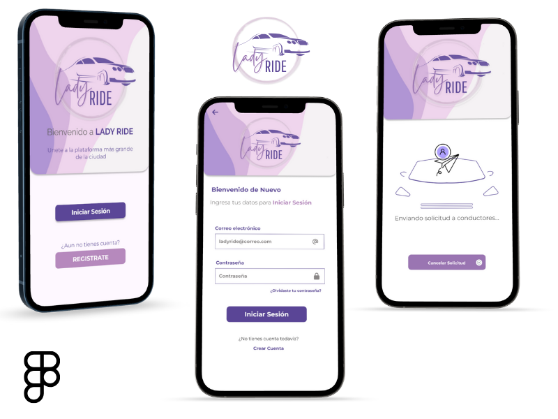
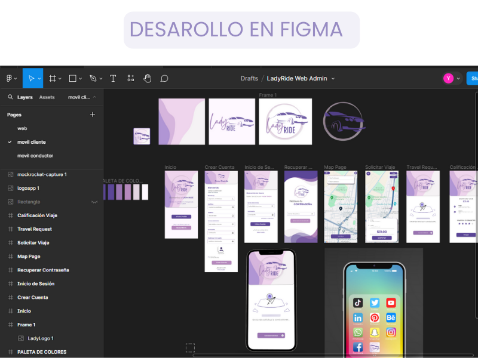
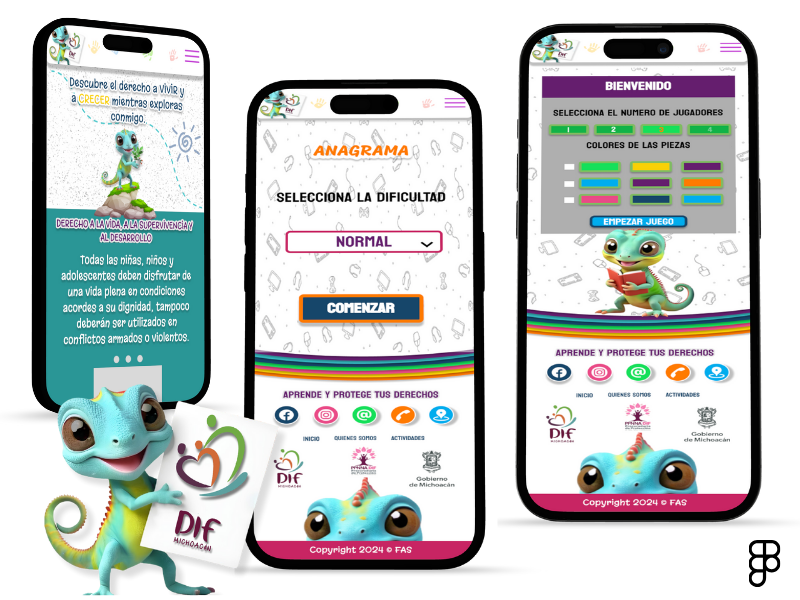
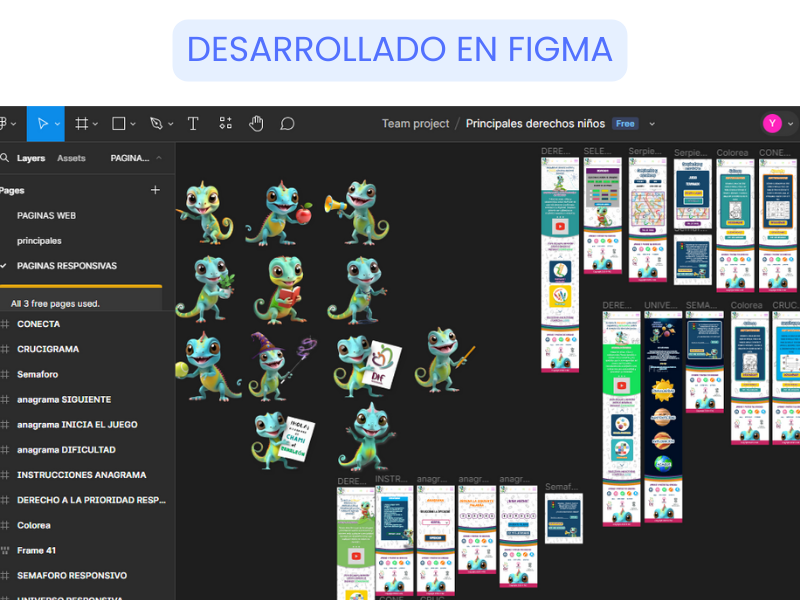
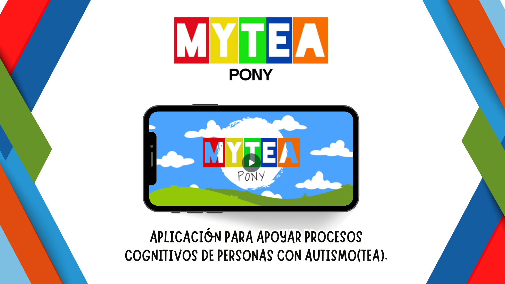

Mis Proyectos
Lady Ride, Aplicación móvil exclusiva para mujeres que brinda transporte seguro, conectando taxistas y pasajeras en un ambiente libre de discriminación, acoso y violencia.
 Aplicación móvil de expediente clínico electrónico para médicos y pacientes, esta app te permite no solo tener tu información médica en la palma de tu mano, sino también agendar citas con el especialista que tu decidas.
En esta aplicación trabaje en el reediseño de la app, de forma que se pudiera ver mas intuitiva y con buena experiencia de usuario.
Aplicación tanto para movíl como para web, desarrollada para representar los derechos de los niños a través de actividades interactivas y de aprendizaje, firmando convenio con el DIF MICHOACÁN
 APLICACIÓN PARA APOYAR PROCESOS COGNITIVOS DE PERSONAS CON AUTISMO(TEA).
Apoya el bienestar emocional y el desarrollo cognitivo. proporciona a profesionales de la salud mental y a sus pacientes con tea una herramienta efectiva y personalizada que promueve el crecimiento, la superación y la mejora de la calidad de vida.
